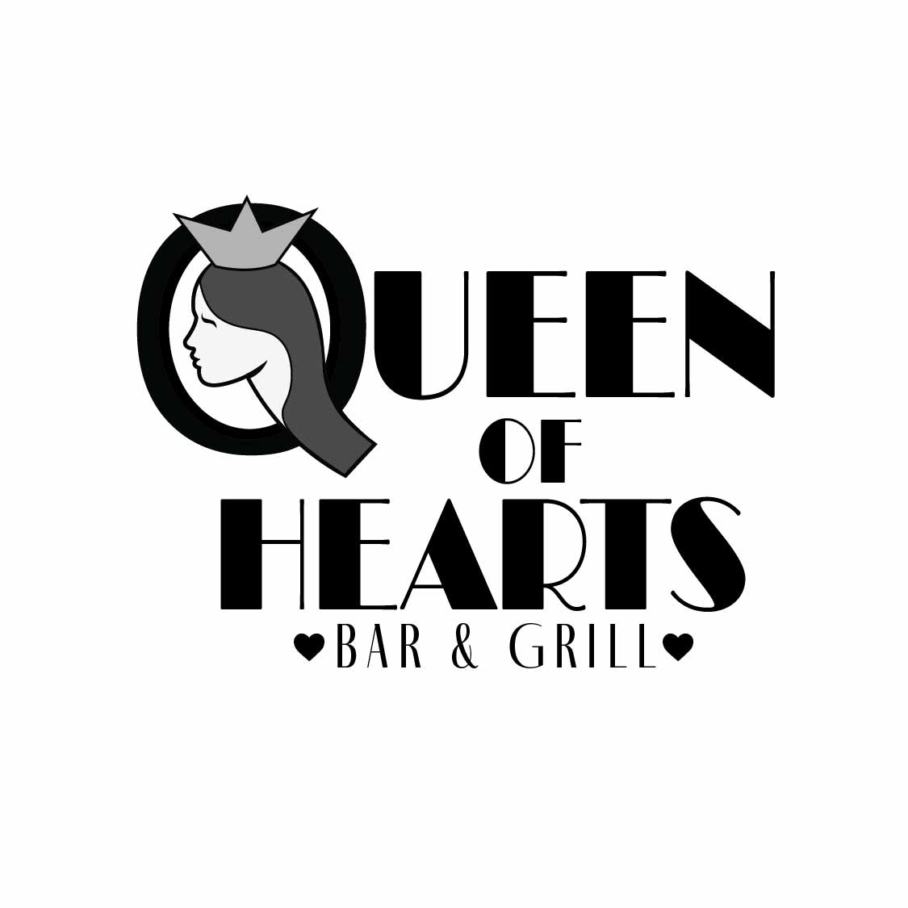

Q. O. H. Logo
Design System
Logo
The Queen of Hearts logo started off as a stacked black and white logo. Color was then added as well as the change to a circular shape.
Typography
Main font: Broadacre Thin 4
Secondary Font: Fino Sans Regular
Colors
Red is a color long associated with royalty and nobility, while also symbolizing passion, love, and intensity. Its use in this logo reinforces the underlying concept of the “Queen of Hearts,” evoking a sense of regality and emotional depth without relying on literal heart imagery. By avoiding overt symbols, the design maintains a level of sophistication and subtlety, allowing the color itself to carry much of the narrative. This strategic choice enhances the logo’s elegance, making it both visually striking and conceptually rich.
Hex Code: #b42328
Blue is a color often associated with royalty, while also carrying connotations of depth, wisdom, and quiet confidence. In this logo, the use of blue introduces a sense of balance to the regal concept, complementing the “Queen of Hearts” inspiration with a more composed and introspective tone. Rather than relying on bold or overt symbolism, the color subtly reinforces the logo’s refined character, allowing it to feel both grounded and sophisticated. This thoughtful application of blue enhances the overall design, creating a visual identity that is elegant, versatile, and enduring.
Hex Code: #242c61
